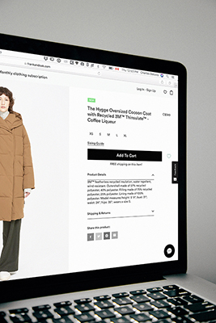

OVERVIEW

Artificial intelligence and fashion— at the surface level, they seem to be two unrelated concepts. One involves performing tasks and analyzing large amounts of data, while the other relates to the development and production of physical clothing. However, they are actually more related than we realize. Fashion companies are in constant need of trend analysis and consumer data analysis in order to ensure the profitability of their businesses. This is where artificial intelligence comes in: it takes all of the data and recognizes patterns faster than any human ever could. Thus, these two concepts are becoming increasingly intertwined as the fashion industry begins to utilize AI.
Well what exactly is artificial intelligence? It is a computer technology that ultimately trains computers to perform human-like tasks. This involves processing vast amounts of data and recognizing patterns that allows the computer to do a specific task. While the media has presented AI as a robot-like, futuristic concept, artificial intelligence actually has many practical uses as it relates to processing data, and the fashion industry has begun to take advantage of that.
So how can artificial intelligence be utilized in the fashion industry? With constantly changing markets, trends and consumer desires, the fashion industry is always studying many types of patterns in order to produce successful products. The faster companies are aware of new trends and create designs to satisfy consumers, the more profitable their business will be. Since AI can quickly and reliably process vast amount of consumer data, the fashion industry is taking advantage of its capabilities to stay on top of trends.
One of the most prevalent problems in the fashion industry is overstocking. At the end of a season, many companies find themselves with an excess of unsold products that will go to waste. In an effort to solve this problem, the industry is utilizing AI. Artificial intelligence can process the consumer data with algorithms, and then predict which products, and how many, will be purchased for the upcoming trend. Thus, this reduces the level of products sitting in the warehouses at the end of a season.
In an online setting, consumers now have expectations for shopping websites:
- That they can find products that fit them well
- That the website won’t waste their time
- That the product they desire will be in stock
- That the products will have a variety to choose from
- That they will have a personalized experience
As consumers, we tend to agree that these are true. Luckily, artificial intelligence allows for all of these expectations to be met. By studying consumer data, AI can give fashion companies all the information about their products that they need. Similarly, AI can allow for a personalized experience, for example, consumers are recommended other products they may like.